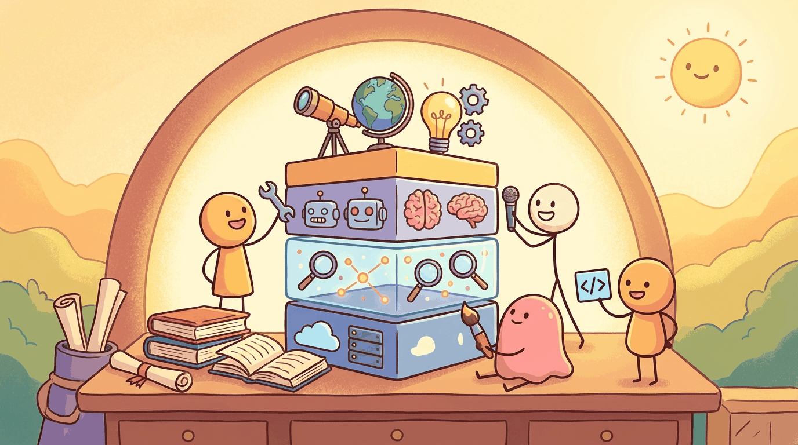

"Every modality is a tax on attention. The trick is making the user forget which one they are looking at."
Author's notebook
Part VII covered four modalities: image (Imagen 4, FLUX.1, SD3, Midjourney, DALL-E), video (Veo 2, Sora 2, Runway Gen-4, Kling), speech (ElevenLabs, Whisper), and music (Suno v5, MusicGen). Each modality has its own platform shelf, library, dataset, and model. This chapter consolidates them.
For all four modalities, one library wraps the open-source side:
pip install diffusers transformersdiffusers ships every major open diffusion architecture (SD, SD3, FLUX, AudioLDM, MusicGen) behind a uniform Pipeline API. For the closed APIs you also need the providers' SDKs.
Sections in This Chapter
- 25.1 Platforms Multimodal platforms split the same way the text-LLM platforms in Section 13.1 do: closed APIs at the frontier, open weights behind them.
- 25.2 Libraries & Frameworks HuggingFace's diffusers is the multimodal analog of transformers from Module 12.
- 25.3 Datasets & Benchmarks The structural shape mirrors text pretraining datasets from Section 7.4: a noisy web-scale corpus for pretraining (LAION-5B, WebVid, AudioSet) and curated evaluation sets for benchmarking (COCO,...
- 25.4 Models The shape of the table on this page is the shape of the text model-zoo discussion in Module 12 and Section 8.1.
- 25.5 External Reading & Communities Like the text-LLM reading list in Section 16.5, the multimodal stack splits across foundational papers, applied tutorials, and online communities.
What Comes Next
Part VIII turns to evaluation and production: how you measure what you have built and how you keep it running. Chapter 46 closes Part VIII with the eval and production stack.